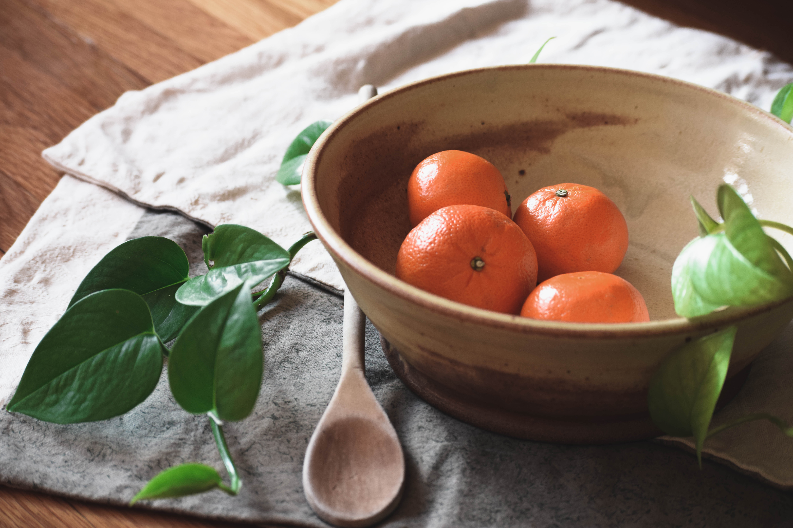

Gallery
One thing that I love about pottery is that each piece can have multiple uses. I love the idea of functional pottery as well as beautiful pieces, and I love being able to create imagery in which you can see the full potential of each piece. This is an edit of images that include different elements for various lifestyle choices, whether you're a cook, a gardener or even a lover of beautiful homewear - Varien Handmade has a piece for you.
